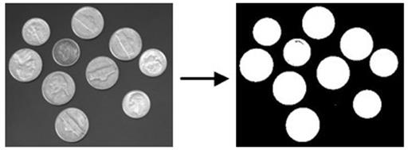

|
类型 |
分割 |
|
描述 |
生成二值图像，数值大于等于thresh0并且小于等于thresh1的像素为255，否则为0。thresh0和thresh1的范围没有限制，只按照上述范围进行判定计算。 别名：ZV_THRESH |
|
语法 |
ZV_ImpThresh(src,dst,thresh0,thresh1)
参数： src：ZVOBJECT类型，图像，不限通道数量和类型 dst：ZVOBJECT类型，二值图像，单通道8U类型 thresh0：低阈值 thresh1：高阈值,thresh1大于等于thresh0 |
|
适用控制器 |
支持ZV功能或者5系列以上的控制器 |
|
例子 |
 ZVOBJECT src,dst ZV_ImgRead(src,"thresh.png",0) '以原图像格式读取图片 ZV_ImpThresh(src,dst,95,255)'生成二值图像dst，数值位于95-255之间的像素为255，否则为0 |